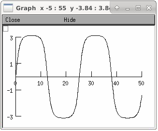

LinearMechanism
- class LinearMechanism
- Syntax:
lm = h.LinearMechanism(c, g, y, [y0], b)lm = h.LinearMechanism(c, g, y, [y0], b, x, sec=section)lm = h.LinearMechanism(c, g, y, [y0], b, sl, xvec, [layervec])lm = h.LinearMechanism(pycallable, c, g, y, ...)- Description:
Adds linear equations to the tree matrix current balance equations. I.e. the equations are solved simultaneously with the current balance equations. These equations may modify current balance equations and involve membrane potentials as dependent variables.
The equations added are of the differential-algebraic form \(c \frac{dy}{dt} + g y = b\) with initial conditions specified by the optional y0 vector argument. c and g must be square matrices of the same rank as the y and b vectors. The implementation is more efficient if c is a sparse matrix since at every time step c*y/dt must be computed.
When a LinearMechanism is created, all the potentially non-zero elements for the c and g matrices must be actually non-zero so that the mathematical topology of the matrices is known in advance. After creation, elements can be set to 0 if desired.
The arguments after the b vector specify which voltages and current balance equations are coupled to this system. The scalar form, x, with the specified section means that the first equation is added to the current balance equation at this location and the first dependent variable is a copy of the membrane potential. If the system is coupled to more than one location, then sl must be a SectionList and xvec a Vector of relative positions (0 … 1) specifying the locations. In this case, the first xvec.size equations are added to the corresponding current balance equations and the first xvec.size dependent y variables are copies of the membrane potentials at this location. If the optional layervec argument is present then the values must be 0, 1, or 2 (or up to however many layers are defined in
src/nrnoc/options.h) 0 refers to the internal potential (equal to the membrane potential when the extracellular mechanism is not inserted), and higher numbers refer to thevext[layer-1]layer (or ground if the extracellular mechanism is not inserted).If some y variables correspond to membrane potential, the corresponding initial values in the y0 vector are ignored and the initial values come from the values of v during the normal
finitialize()call. If you change the value of v after finitialize, then you should also change the corresponding y values if the linear system involves derivatives of v.Note that current balance equations of sections when 0 < x < 1 have dimensions of milliamp/cm2 and positive terms are outward. Thus c elements involving voltages in mV have dimensions of 1000 \(\mathrm{\mu{}F/cm^2}\) (so a value of .001 corresponds to 1 \(\mathrm{\mu{}F/cm^2}\)), g elements have dimensions of \(\mathrm{S/cm^2}\), and b elements have dimensions of outward current in \(\mathrm{milliamp/cm^2}\). The current balance equations for the zero area nodes at the beginning and end of a section (x = 0 and x = 1) have terms with the dimensions of nanoamps. Thus c elements involving voltages in mV have dimensions of nF and g elements have dimensions of \(\mathrm{\mu{}S}\).
The existence of one or more LinearMechanism switches the gaussian elimination solver to the general sparse linear equation solver written by Kenneth S. Kundert and available from http://www.netlib.org/sparse/index.html Although, even with no added equations, the solving of m*x=b takes more than twice as long as the original default solver, there is no restriction to a tree topology.
Example:
from neuron import h tstop = 5 soma = h.Section(name="soma") soma.insert(h.hh) # ideal voltage clamp. c = h.Matrix(2, 2, 2) # sparse - no elements used g = h.Matrix(2, 2) y = h.Vector([0, 0]) # y[1] is injected current b = h.Vector([0, 10]) # b[1] is voltage clamp level g.setval(0, 1, -1) g.setval(1, 0, 1) model = h.LinearMechanism(c, g, y, b, 0.5, sec=soma) h.finitialize(-65) while h.t < tstop: print('t=%-8g v=%-8g y[1]=%-8g' % (h.t, soma(0.5).v, y[1])) h.fadvance()
Warning
Does not work with the CVODE integrator but does work with the differential-algebraic solver IDA. Note that if the standard run system is loaded,
h.cvode_active(True)will automatically choose the correct variable step integrator.Warning
Does not allow changes to coupling locations.
Is not notified when matrices, vectors, or segments it depends on disappear.
- Description (continued):
If the pycallable argument (A Python Callable object) is present it is called just before the b Vector is used during a simulation. The callable can change the elements of b and g (but do not introduce new elements into g) as a function of time and states. It may be useful for stability and performance to place the linearized part of b into g. Consider the following pendulum.py with equations
Example:
\[\frac{d\theta}{dt} = \omega\]\[\frac{d\omega}{dt} = -\frac{g}{L} \sin(\theta) \text{ with } \frac{g}{L}=1\]from neuron import h, gui from math import sin cmat = h.Matrix(2, 2, 2).ident() gmat = h.Matrix(2, 2, 2) gmat.setval(0, 1, -1) y = h.Vector(2) y0 = h.Vector(2) b = h.Vector(2) def callback(): b[1] = -sin(y[0]) nlm = h.LinearMechanism(callback, cmat, gmat, y, y0, b) dummy = h.Section(name="dummy") trajec = h.Vector().record(y._ref_x[0]) tvec = h.Vector().record(h._ref_t) graph = h.Graph() h.tstop=50 def prun(theta0, omega0): graph.erase() y0[0] = theta0 y0[1] = omega0 h.run() trajec.line(graph, tvec) h.dt /= 10 h.cvode.atol(1e-5) h.cvode_active(True) prun(0, 1.9999) # 2.0001 will keep it rotating graph.exec_menu("View = plot")